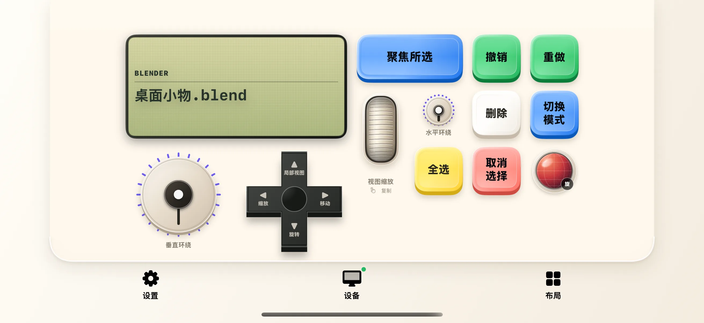
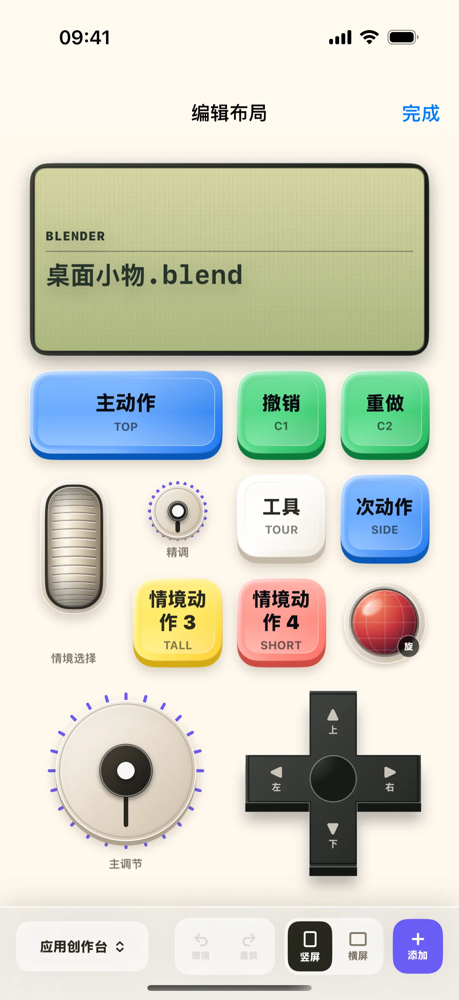

应用创作台会根据 Mac 前台软件改变控制含义。与其一次尝试所有控件，不如先用 Blender 的临时场景验证“选择、模式、视角”这三组操作，再决定是否需要调整布局。
开始前准备
- iPhone / iPad 安装奶猫妙控 1.2.0，Mac 安装同版本配套端；完成配对，并允许 Mac 端的辅助功能权限。需要电脑画面时，再开启屏幕录制权限。
- 在 Mac 打开 Blender，使用默认快捷键配置和一份临时场景，把鼠标放在 3D 视图中。自定义键位、焦点落在文本框、正在输入变换数值，都可能改变快捷键的效果。
1. 打开 Blender 后进入应用创作台
在 App 底部点“布局”，在列表中找到“应用创作台”。布局较多时用搜索框搜索名称；有多个桌面的方案先点右侧箭头展开，再点桌面名称；搜索具体桌面名称也能找到它。
检查上方软件信息是否对应 Blender，再看各按钮是否显示“聚焦所选”“全选”“取消选择”等与当前软件相符的名称。截图中的“桌面小物.blend”是演示工程名，不是你需要下载的文件。
如果还显示另一个软件的操作，先把 Blender 切到 Mac 前台，等状态更新；不要在错误的软件映射下连续按键。

2. 用全选与取消选择验证输入目标
在临时场景中先点“全选”，到 Mac 检查对象选择是否变化；再点“取消选择”，检查选区是否清除。每次只点一下，等待反馈后继续。
这两个操作能帮助判断焦点是否在 3D 视图。如果你正在编辑一个文字字段，先退出文字输入并把鼠标移回 3D 视图，再重复验证。
3. 选择一个对象，试“聚焦所选”
在 Blender 里直接选中一个对象，再点手机“聚焦所选”，检查视图是否围绕所选对象调整。随后轻调水平、垂直环绕控制，观察视角变化。
视角变化与对象变换不同。环绕是观察方向；方向控制上的“移动”“旋转”“缩放”会进入对象变换操作，不应在还没分清它们时连续混用。
4. 确认模式切换，再开始编辑
选中可编辑对象后，点“切换模式”按钮，检查 Blender 当前模式；再次按下返回。处于不同模式时，同一快捷键可能作用于对象、顶点或其他元素。
先完成选择与模式练习，再使用删除或变换。若需要取消正在进行的 Blender 操作，先在 Mac 按 Escape，确认已回到稳定状态。
5. 横放手机，检查常用控制是否顺手
把手机横放，查看同一布局的横屏排列。再次确认主要控制的名称，不要只按竖屏时记住的位置操作。
横屏不会把 Blender 的模式或工程切换到另一份内容；你仍应在 Mac 检查当前对象与视图。

6. 需要调整时，进入当前桌面编辑
点“布局 → 编辑当前桌面”，先检查已有控件及其绑定。修改前记住原来的含义，完成后每次只验证一颗键，避免同时修改整套映射后难以定位问题。
换到剪辑、绘图或音频软件时，应重新从“确认软件信息与按钮名称”开始。列入适配的软件并不代表所有版本、窗口和专有功能都具有同等支持；需要配套插件的软件按集成包中的 README 安装。

参考：下载配套集成与对应软件安装说明。
操作不符合预期时
软件已打开，控件仍不可用？
先核对前台应用、编辑上下文与配套集成状态。只有适配端提供了对应能力，控件才应启用；不能通过强制点亮按钮获得软件没有提供的功能。
我的 Blender 操作和教程不同？
先检查默认键位、3D 视图焦点和物体／编辑模式，再在 Mac 直接验证该操作。导入的自定义预设会保留自己的绑定，不保证与内置方案相同。
本文按奶猫妙控 1.2.0 的界面与操作编写，更新于 2026 年 9 月 10 日。查看更新日志 · 连接与权限帮助。